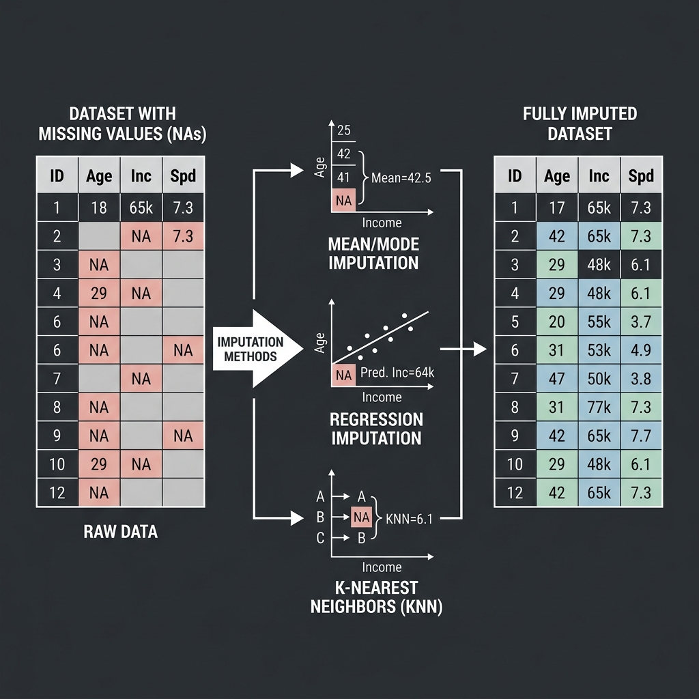
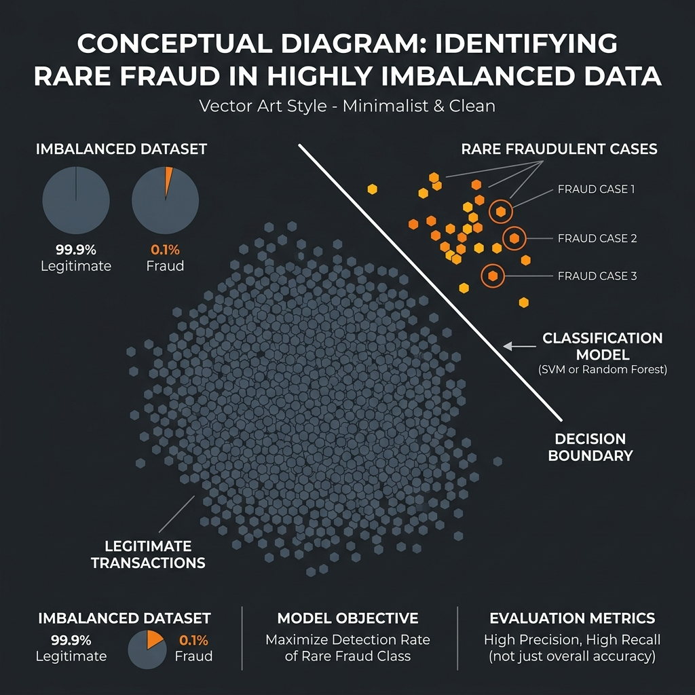
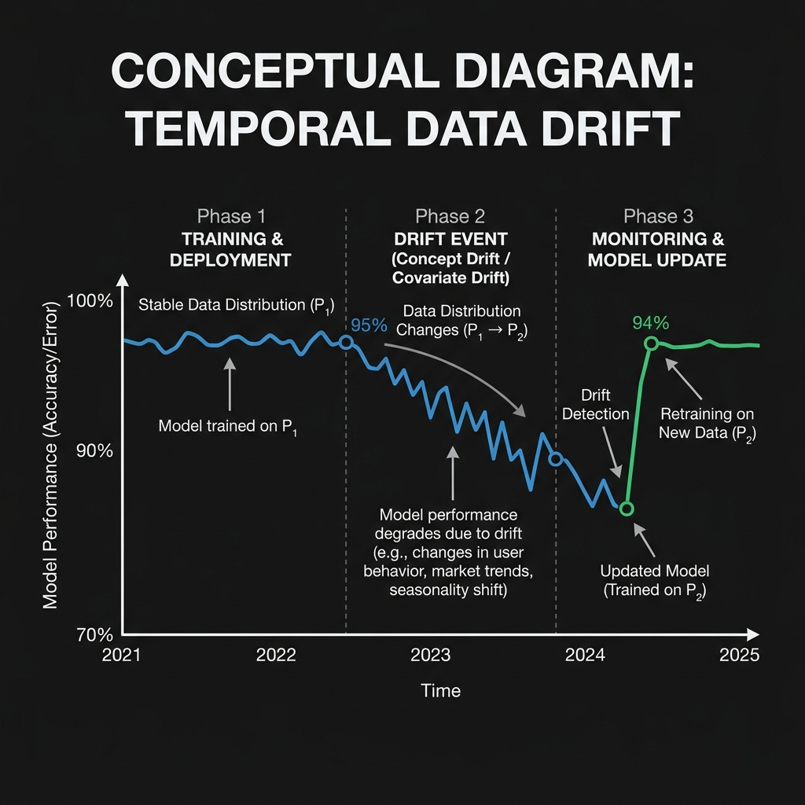
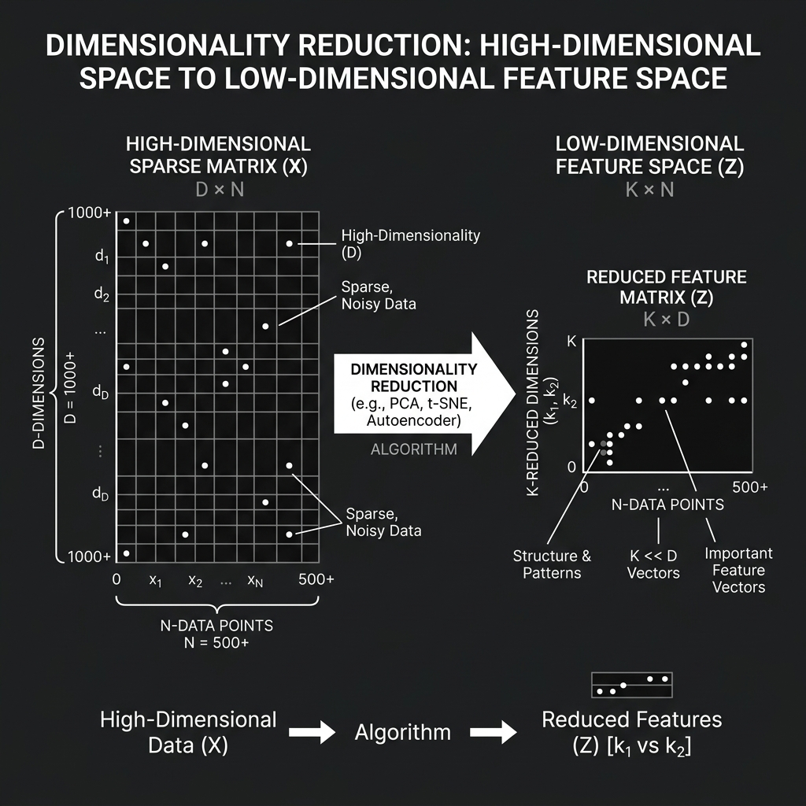
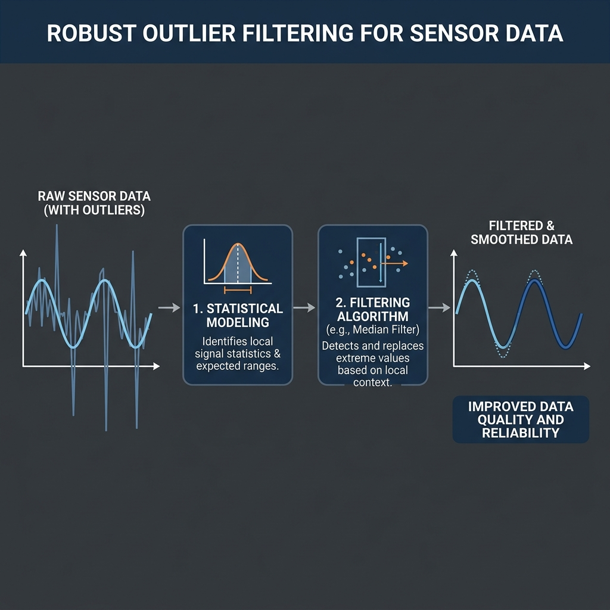
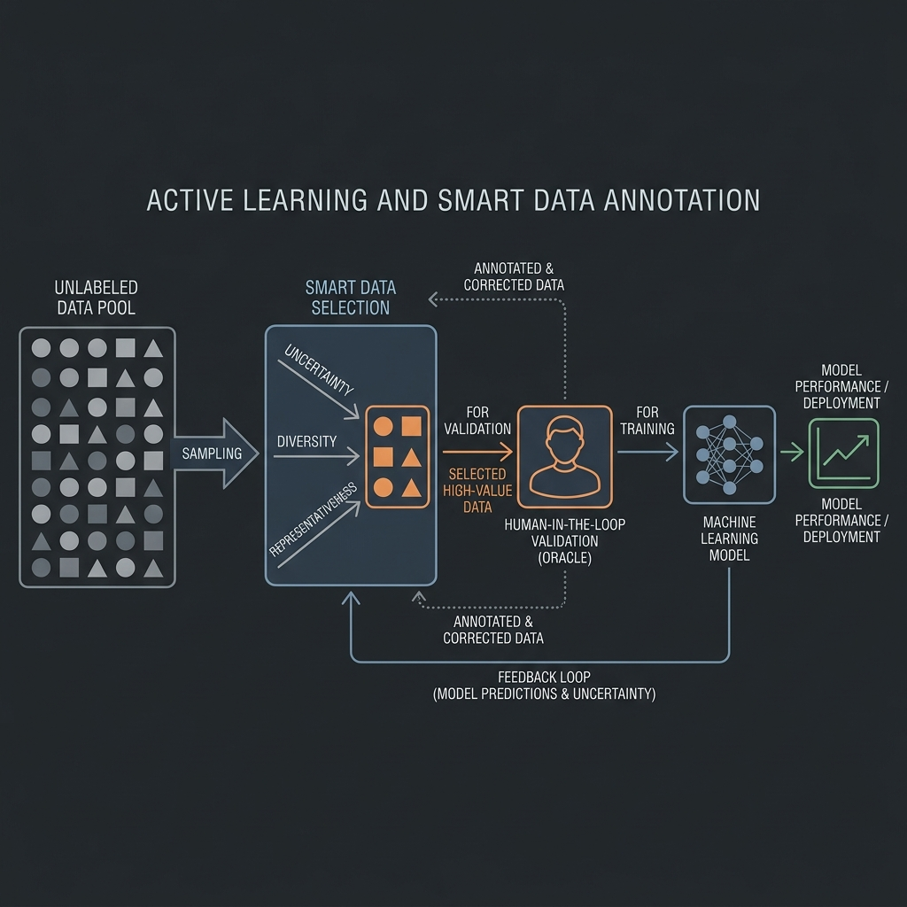
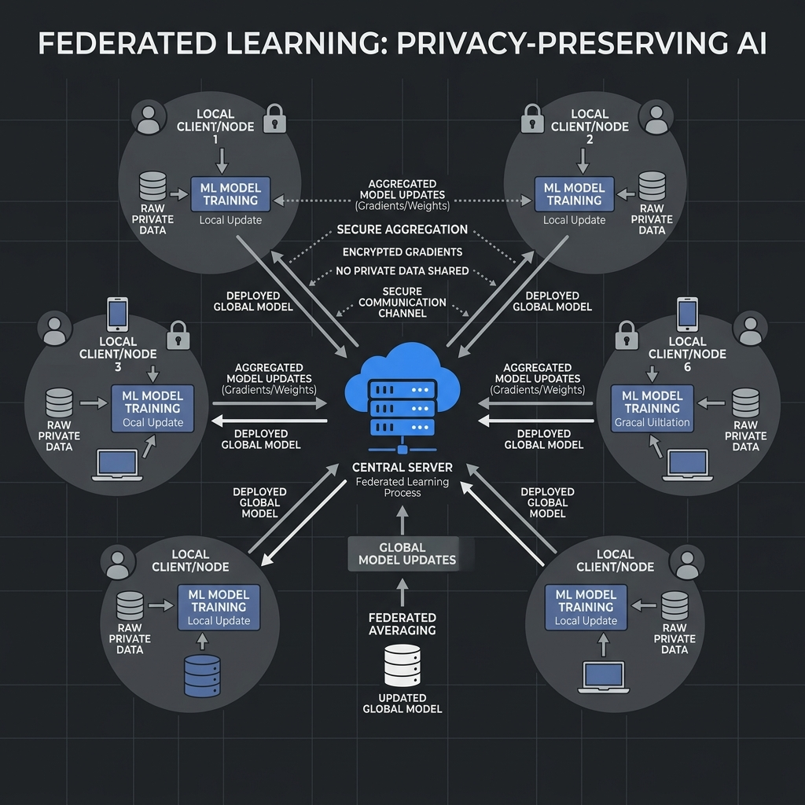
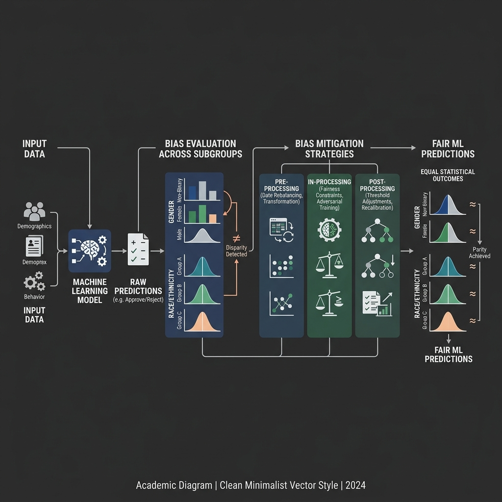
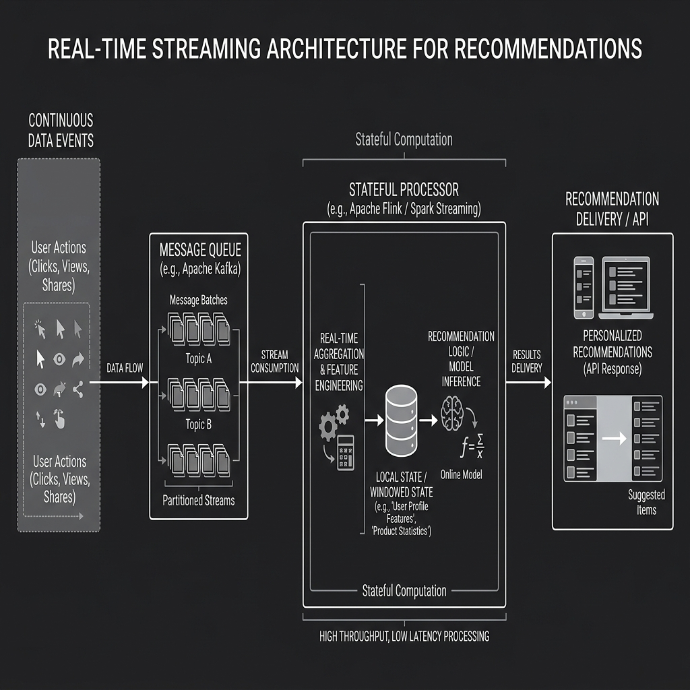

Introduction
Machine learning systems rarely fail because the algorithm is too simple. More often, they fail because the data is incomplete, noisy, delayed, biased, imbalanced, private, high-dimensional, or too fast-moving for a static pipeline to handle. Real-world AI work depends on the ability to recognize these conditions early and respond with structured, defensible decisions.
This artifact explores a set of practical data challenges that appear across common machine learning applications, from churn prediction and fraud detection to demand forecasting, computer vision, healthcare, natural language processing, and real-time recommendation systems. Rather than treating each challenge as an isolated issue, the artifact presents them as part of a broader discipline: building AI systems that remain accurate, fair, scalable, and trustworthy under imperfect conditions.
Description
This artifact brings together nine applied scenarios and turns them into a practical framework for solving data problems before they become model problems.
Each scenario highlights a different pressure point in the machine learning lifecycle: missing values, noisy labels, class imbalance, drift, feature overload, sensor outliers, limited labeling budgets, privacy restrictions, ethical bias, and large-scale streaming demands.
The focus is not just on technical fixes. It is on showing how strong machine learning practice combines diagnosis, preprocessing, modeling, monitoring, and governance.
Across all scenarios, one idea remains constant: a model is only as dependable as the data strategy behind it.
Objective
The objective of this artifact is to show how data challenges can be approached systematically.
The emphasis is on improving model quality, reducing risk, and supporting reliable deployment.
It focuses on turning ambiguous data conditions into practical engineering decisions that are measurable, explainable, and suitable for production.
Process: A Practical Workflow for Solving Data Challenges
| Stage | Key Question | Example Actions |
|---|---|---|
| Diagnose | What exactly is wrong with the data? | Profile missingness, inspect class ratios, test drift, audit labels, review subgroup outcomes |
| Stabilize | How can the data be made usable? | Impute, cap spikes, resample, filter features, add guardrails, secure aggregation |
| Model | Which approach fits the constraint? | Use robust loss, regularization, tree ensembles, rolling forecasts, federated training, streaming updates |
| Validate | Did the fix actually improve trustworthiness? | Cross-validation, backtesting, PR-AUC, fairness checks, agreement scores, load tests |
| Monitor | Could the problem return after deployment? | Track drift, latency, missingness, subgroup errors, data quality, privacy budgets |
1. Diagnose the Data Before Modeling
The first step in every scenario is diagnosis rather than immediate model training.
| Scenario | Primary Risk | First Diagnostic Step |
|---|---|---|
| Customer churn | Missing values | Measure missingness rates, patterns, and whether missingness depends on customer behavior |
| Fraud detection | Rare positives and noisy labels | Audit class distribution and investigate label source reliability |
| Demand forecasting | Temporal drift and delayed labels | Compare recent and historical distributions and seasonal patterns |
| Text classifier | High dimensionality | Measure sparsity, feature redundancy, and signal concentration |
| IoT prediction | Sensor spikes and outliers | Detect anomalous ranges, frequency of spikes, and sensor-specific instability |
| Object detection | Limited labeling budget | Estimate annotation effort, uncertainty, and class coverage |
| Hospital collaboration | Privacy limits | Identify what can be learned locally and aggregated securely |
| Resume screening | Historical bias | Audit representation, target imbalance, and fairness risk by subgroup |
| Recommender system | Real-time scale | Map event throughput, state size, latency limits, and failure points |
This step matters because many performance problems that appear to be “model issues” are actually data-quality or pipeline-design issues.
2. Match the Treatment to the Data Problem
Each scenario calls for a different intervention.
1. Missing Data in Churn Modeling

Start by profiling the missingness and checking whether it is random or systematic. Customer groups with and without missing values should be compared before any imputation is applied.
Because long-term customers appear more likely to have missing tenure, the gap may contain signal rather than pure error. A strong response is to impute carefully, add missingness indicators, and test whether tree-based models can learn from the pattern directly.
Median or segment-based imputation may work for monthly charges. Tenure may benefit more from grouped imputation or reconstruction from account history.
2. Imbalanced Classes and Noisy Labels in Fraud Detection

With only 1% fraud cases, the first step is class-ratio analysis and label auditing. The model should not be judged by accuracy alone.
Evaluation should focus on precision, recall, PR-AUC, cost-sensitive thresholds, and false-positive burden. To manage imbalance, class weighting or controlled resampling can be used.
To reduce label-noise damage, suspected fraud labels should be reviewed, down-weighted, or handled with robust loss strategies. Ensemble tree models are often effective because they capture nonlinear patterns in mixed tabular data.
3. Temporal Drift and Delayed Labels in Forecasting

When demand patterns shift after reopening, the model must separate real seasonality changes from temporary disruption.
The response begins with time-sliced drift analysis, rolling validation, and feature reengineering using recent calendar behavior, promotions, local trends, and SKU-store interactions.
Even when labels are delayed, recent unlabeled windows still help with drift detection and feature monitoring. Retraining should become more frequent, and validation should prioritize the newest stable periods.
4. High Dimensionality in Text and Metadata Classification

With 10,000 sparse features and 50,000 examples, dimensionality reduction should preserve signal while cutting noise.
A practical approach is to remove low-value features, apply regularization, rank features by importance, and compare sparse linear baselines with embedded selection methods.
The most reliable pipeline combines vectorization, feature filtering, and cross-validated regularized models. Stability should be checked by confirming that performance holds when feature subsets change.
5. Outliers and Noisy Sensors in IoT Prediction

For streaming sensor data, extreme spikes often come from transmission errors rather than real machine behavior.
The pipeline should include robust outlier rules, sliding-window smoothing, range validation, and sensor-health flags. The goal is not to remove every unusual value automatically.
The better approach is to separate likely corruption from rare but legitimate failure signals. Robust preprocessing and robust models help preserve the anomalies that actually matter.
6. Annotation Scalability in Computer Vision

Labeling 200,000 images manually is expensive, so the process should combine human effort with model-assisted labeling.
Active learning can prioritize uncertain or representative images. Weak supervision can provide initial signal, and synthetic data can expand rare-case coverage.
Quality control should include gold-label checks, agreement audits, and relabeling for disputed cases. This makes the labeling pipeline scalable without treating every image as equally valuable.
7. Privacy-Preserving Learning Across Hospitals

When hospitals cannot share raw records, training must move to the data instead of moving the data to the model.
A federated design allows local training at each hospital and secure aggregation of updates. Differential privacy lowers re-identification risk, while secure aggregation limits visibility into local contributions.
The trade-off is that privacy protection can reduce accuracy and increase system complexity. Validation therefore has to compare utility, subgroup reliability, and privacy cost together.
8. Bias and Ethics in Resume Screening

Historical hiring data can encode discrimination, so the safest design begins by questioning the target itself.
Sensitive proxies should be removed or tightly controlled. Feature behavior should be audited, fairness should be tested across subgroups, and outcomes should be compared using fairness-aware metrics rather than accuracy alone.
Model review should also include human oversight, appeal mechanisms, and documentation of intended use. Ethical evaluation belongs inside system design, not at the end of it.
9. Real-Time Recommendation at Massive Scale

Updating embeddings for millions of users under heavy event throughput requires a streaming-first architecture.
Events should move through a durable messaging layer into stateful stream processors that update user representations incrementally and publish refreshed embeddings to online serving systems.
The design must handle late events, backpressure, recovery, partitioning, and feature consistency. Scalability testing should simulate realistic bursts while measuring latency, throughput, and state correctness.
3. Build Validation Into Every Solution
Strong artifact design does not stop at proposing a technique. Each solution must be tested in a way that matches the risk.
- Missing data solutions should be validated through sensitivity analysis and comparison across imputation strategies.
- Fraud systems should be validated with threshold analysis, cost-aware metrics, and drift checks over time.
- Forecasting systems should use rolling backtests rather than random splits.
- Feature selection should be validated through repeated cross-validation and stability checks.
- Sensor pipelines should be tested against simulated spike corruption and actual failure cases.
- Labeling systems should track inter-annotator agreement and downstream model improvement.
- Federated systems should validate both utility and privacy guarantees.
- Fairness-sensitive NLP tools should test subgroup outcomes and error disparities.
- Streaming recommenders should undergo load testing, replay testing, and failure recovery drills.
4. Treat Monitoring As Part of the Solution
The common thread across all nine scenarios is that a one-time fix is never enough. Missingness rates can change. Fraud patterns evolve. Seasonality shifts. Sensor quality drifts. Labels decay. Bias can reappear. Streaming systems degrade under load. The artifact therefore frames monitoring as a core design requirement rather than a post-deployment extra.
Tools and Tech Used
- Research: Applied machine learning concepts, model governance principles, and data-centric AI practices drawn from workshop scenario analysis.
- Data Profiling: Missing-value analysis, distribution checks, drift metrics, label audits, agreement studies, and anomaly detection methods.
- Modeling: Regularized linear models, tree-based ensembles, time-series forecasting approaches, robust classifiers, privacy-aware training methods, and embedding systems.
- Pipeline Engineering: Batch pipelines, streaming processors, feature stores, secure aggregation workflows, and monitoring layers.
- Evaluation: Cross-validation, rolling backtesting, precision-recall analysis, fairness metrics, reliability checks, and production monitoring indicators.
- Visualization and Structuring: Tables, scenario mapping, workflow framing, and technical synthesis for clear communication.
Value Proposition of the Artifact
The value of this artifact lies in its shift from isolated technical tricks to an integrated decision framework.
Instead of asking only, “Which model should be used?” it asks the more important question: “What must be true about the data and pipeline for the model to be trusted?”
That makes the artifact useful in both technical and leadership settings. It shows that solving data challenges is not just about improving metrics. It is also about reducing operational risk, supporting fairness, protecting privacy, and improving long-term maintainability.
Unique Value
What makes this artifact distinctive is its cross-scenario structure.
It does not focus on one domain alone. Instead, it connects tabular data, time series, computer vision, sensor streams, healthcare data, NLP, and large-scale recommendation systems through one shared lens: responsible problem-solving under data constraints.
That makes it more than a summary of techniques. It becomes a practical guide for recognizing patterns that repeat across machine learning projects, even when the application domain changes.
Relevance
This artifact is highly relevant to modern AI and analytics work because data challenges are now the rule rather than the exception.
Organizations increasingly work with incomplete records, delayed labels, privacy restrictions, biased histories, and systems that must operate continuously at scale.
Professionals who can identify these problems early and design thoughtful responses create models that are not only more accurate, but also more reliable and more defensible.
In that sense, the artifact reflects an industry reality: successful machine learning is less about perfect data and more about disciplined adaptation to imperfect data.
References
- Géron, A. (2022). Hands-on machine learning with Scikit-Learn, Keras, and TensorFlow (3rd ed.). O’Reilly Media.
- Goodfellow, I., Bengio, Y., & Courville, A. (2016). Deep learning. MIT Press.
- Kuhn, M., & Johnson, K. (2019). Feature engineering and selection: A practical approach for predictive models. CRC Press.
- Mitchell, T. M. (1997). Machine learning. McGraw-Hill.
- Sculley, D., Holt, G., Golovin, D., Davydov, E., Phillips, T., Ebner, D., Chaudhary, V., Young, M., Crespo, J.-F., & Dennison, D. (2015). Hidden technical debt in machine learning systems. In NIPS.
- Zhang, A., Lipton, Z. C., Li, M., & Smola, A. J. (2021). Dive into deep learning. Cambridge University Press.